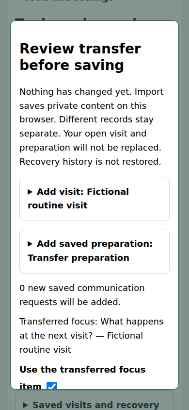
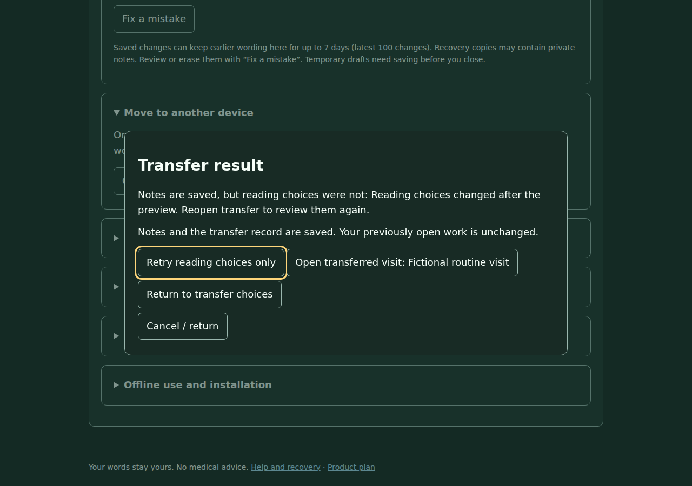

01 / 12 · The decision
Move browsers without rebuilding your work
Bring saved visits, private follow-up progress, preparation and kept results into one deliberate file transfer. The person chooses what to include, reviews what will be saved, and decides what to open afterward. There is no shared account or automatic syncing.
Speaker notes
The earlier software split this work across separate backups and settings. That is an observable product gap, not evidence of how frequently people change devices or whether they prefer this approach.
02 / 12 · The complete journey
Prepare here. Continue there. Bring changes back.
A fictional person prepares on one browser, transfers to another, resumes unfinished preparation, records progress offline and brings a new file back. Different versions stay separate. The original browser’s notes are not silently overwritten.
Speaker notes
Use two isolated browser contexts for the full journey, plus persistent-browser restarts for offline checks. These are software tests, not physical-phone sessions.
03 / 12 · One private file
Say exactly what travels
Saved visits, answer notes, follow-up history, saved preparation, completed results, communication requests and focus travel together. Reading choices are optional. The file is unencrypted; anyone with it can read the private contents. Downloading is not proof of a safe backup elsewhere.
Speaker notes
Recovery history and recently removed objects are excluded. Existing preparation copies may still contain earlier words. Temporary message drafts need their own copy/download before closing.
04 / 12 · Unfinished work
Never quietly substitute an older saved copy
If a visit or preparation has unsaved work, choose explicitly whether to include it or leave it out. Included snapshots stay separate from older saved records. Downloading does not save that work in the source browser.
Speaker notes
An included unsaved visit is retained inside a separate saved preparation copy on import. Opening it creates a temporary visit; it is not silently promoted to a normal saved visit.
05 / 12 · The preview
Inspect before changing anything
The preview shows what is already present, what will be added and which different records will both be kept. Expand records to compare their private wording, progress and retained results. Incoming focus and reading choices start unchecked.

Speaker notes
Counts alone do not let someone distinguish two records with the same title. The preview includes the actual details, focus wording and new communication requests.
06 / 12 · Correct links
A retained result must open its own words
Imported source links, preparation destinations, focus and completion records must follow the correct imported record. A temporary result stays separate from an older saved visit even if both started with the same identifier. Missing originals are reported, not guessed.
Speaker notes
Two audit tests exposed an identity collision in retained temporary results. The fix gives each distinct retained version its own local identity and completion links. Do not count text preservation alone as correct restoration.
07 / 12 · Completion matters
Do not add the same passages again
Preparation completion records travel too. An older file with pending passages cannot replay a batch already recorded as completed. If different results exist for one batch, keep both results and their own records without adding passages during import.
Speaker notes
Minimal completion identifiers may outlive deleted preparation. This is separate from transfer-file history and from the actual private result text.
08 / 12 · Two separate saves
Saved notes must not depend on reading settings
Notes and the local import record save together. Optional reading settings save afterward through their separate storage key. If that second operation fails, say that notes are saved and settings are not. Retry only settings without duplicating the notes.

Speaker notes
The app does not claim two browser storage writes are atomic. A newer reading choice from another tab is preserved instead of overwritten by an old preview.
09 / 12 · Deletion and repetition
An old file must not quietly bring deleted notes back
A local record remembers which exact files were restored, using fingerprints and item identifiers rather than copies of the wording. Reopening that file preserves later edits and deletions. A separate confirmed forgetting action removes only this record.
Speaker notes
After forgetting, a deliberate new import can bring back content in an old file. Explain that consequence. Files downloaded elsewhere are not erased by local deletion.
10 / 12 · Technical evidence
Check the return journey and the failure paths
15/15 transfer browser scenarios passed in the recorded run. 100 model checks passed. Existing visit, phone, preparation, recovery and follow-up suites remain release gates. The final archive is also tested after extraction.
- TR-01 — Two isolated browsers transfer preparation and focus, continue offline, and preserve both versions on return: passed
- TR-02 — Unsaved work needs explicit choices and restores separately without replacing the receiving draft: passed
- TR-03 — Failed note writes leave no partial import; settings failure can retry without duplicating notes: passed
- TR-04 — Malformed files and cancelled previews leave saved content and open work unchanged: passed
- TR-05 — A concurrent tab invalidates the preview rather than overwriting newer notes: passed
- TR-06 — Cancelled and closed-tab imports cannot apply after a held storage lock is released: passed
- TR-07 — Double confirmation and repeated import after permanent deletion do not repeat or resurrect visits: passed
- TR-08 — Complete persistent-browser restart retains transferred notes and permits offline export with no outgoing content: passed
- TR-09 — Settings changed after preview are not overwritten; private comparison and keyboard controls fit narrow and enlarged views: passed
- TR-10 — Explicit exclusions preserve unsaved work and incoming focus and display never replace local choices by default: passed
- TR-11 — Forgetting transfer identifiers requires confirmation and preserves all current notes: passed
- TR-12 — Previous collection-five data stays unchanged until explicit import and remains exportable: passed
- TR-13 — Unsupported and oversized transfer files are rejected before saving: passed
- TR-14 — Retained temporary results open their exact version rather than a same-ID older saved visit: passed
- TR-15 — An older pending preparation cannot repeat passages after its completion was transferred: passed
Recorded 2026-09-16T21:54:16.808Z. Browser results and source hashes · Model evidence
Speaker notes
The transfer checks cover different versions, unsaved work, failed writes, settings retry, stale previews, cancellation, closed tabs, duplicates, older formats, oversized files, restart and completion replay. Reports and source hashes define the evidence.
11 / 12 · What this does not prove
Working software is not a usefulness study
All journeys are fictional. No participant sessions, reduced-effort claims or medical benefits are asserted. Physical-phone and screen-reader use remain unverified. Narrow desktop views and CSS enlargement are limited engineering checks.
Speaker notes
No recruitment, external sending, cloud service, notifications, medical interpretation or automatic syncing is part of this milestone. Future evaluation is separate.
12 / 12 · Delivery and approval
Finish the complete transfer, not only the download
Deliver the download, preview, safe import, separate-copy handling and continuation together with detailed requirements, ten fictional journeys, this briefing with speaker notes, acceptance evidence and a verified package. Approval requires all current-source gates and the extracted two-browser journey.
Speaker notes
Read the requirement map and matching release manifest/verification. An old successful archive does not approve later source edits.